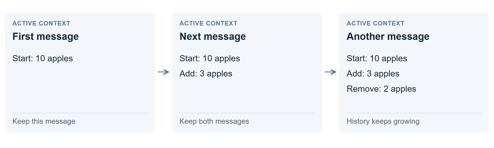

Use a larger context window
Keep the conversation in a bigger working memory. The model can refer to more earlier text without first deciding what to remove. This is the familiar chat approach, with a larger context window.

How it works
Imagine a stock ledger: start with 10 apples, add 3, then remove 2. A growing conversation can retain all three updates and the model’s replies. When asked for the total, the model can look back through them.
Each new message takes more room. The window must hold instructions, earlier messages, tool results and space for the next answer. A prefix cache can avoid processing the unchanged beginning again, but the retained text still occupies active context.
What happened in the test?
| Trial | Correct | Time |
|---|---|---|
| 121K, run 1 | 24/24 | 26 min |
| 121K, run 2 | No answer | 38 min |
These were two versions of the 121K-token ledger. In the successful run, code filtered the incoming batches. In the other, raw batches and repeated copies filled the window before the final questions arrived.
When does it help?
It is useful when the model needs to compare many passages together, or when you cannot predict which earlier detail will matter. There is no summary deciding what survives.
Where does it run out?
The window is finite, and retaining text does not guarantee a correct lookup. Longer context also uses more GPU memory and slowed writing in the lab: about 127 tokens/s near 8K versus 27 near 250K in separate prompt tests.
Technical details: the baseline and its limit
The model’s configured limit was 262,144 token positions. This arm had no smaller management budget and forbade external data files, but allowed shell commands. It was not a requirement to show the model every raw input line.
On seed 1, the running state was correct through the 18 delivered batches. Context reached about 245,900 tokens; the next request was refused before the questions were delivered. Showing the agent its remaining space and checking before fetching are practical safeguards.